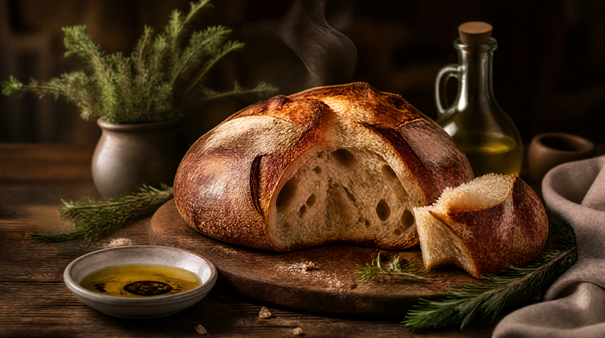
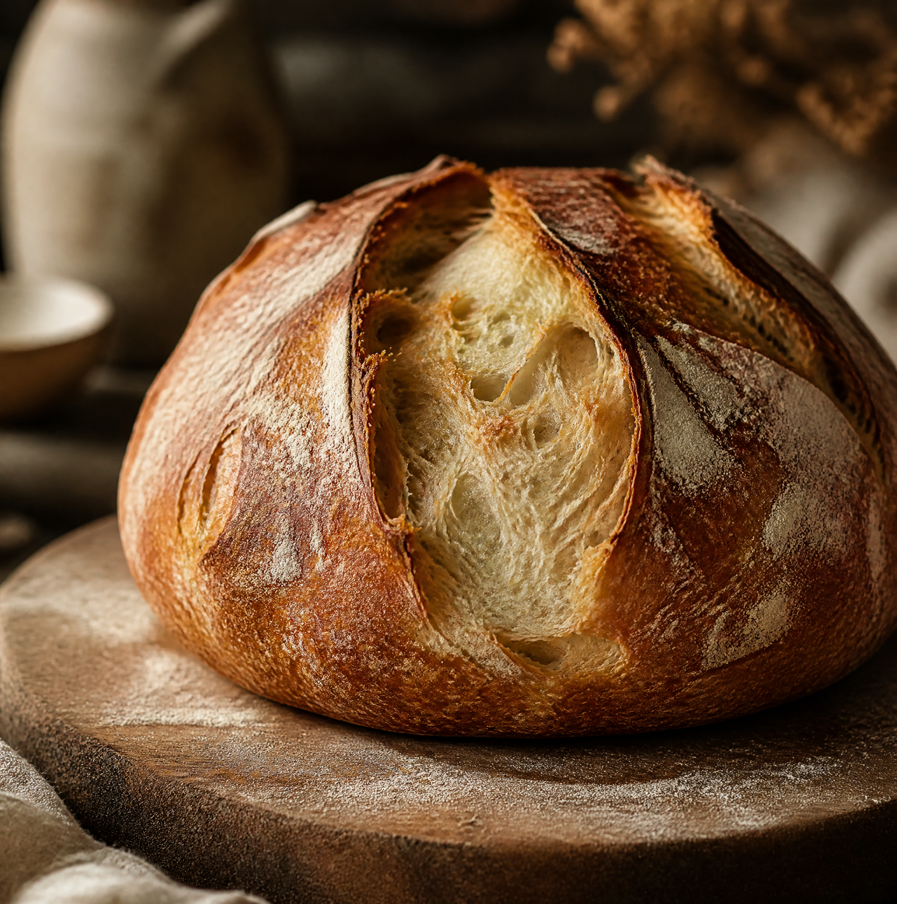
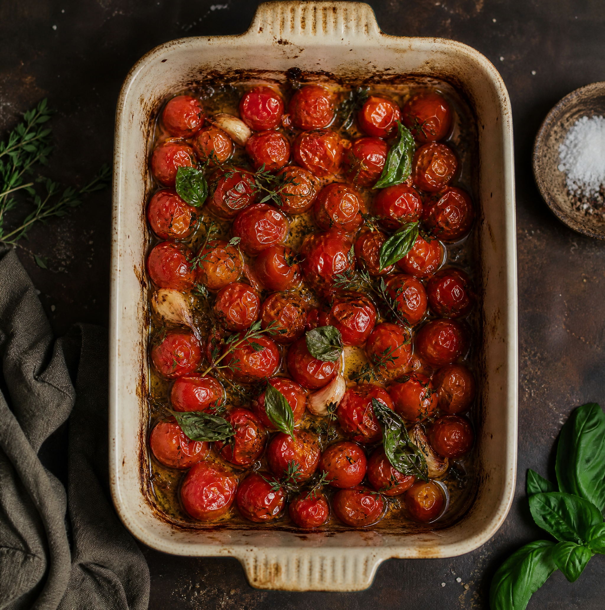
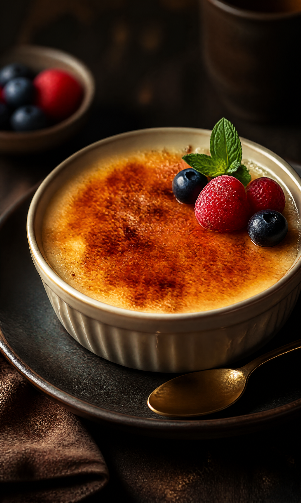
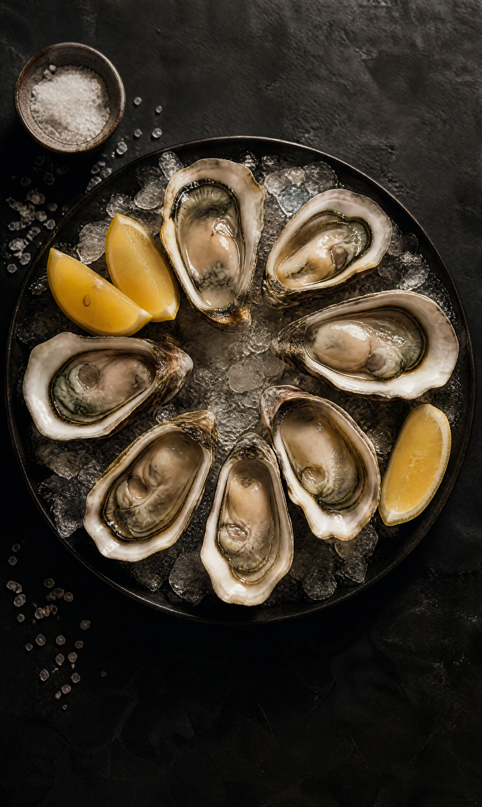
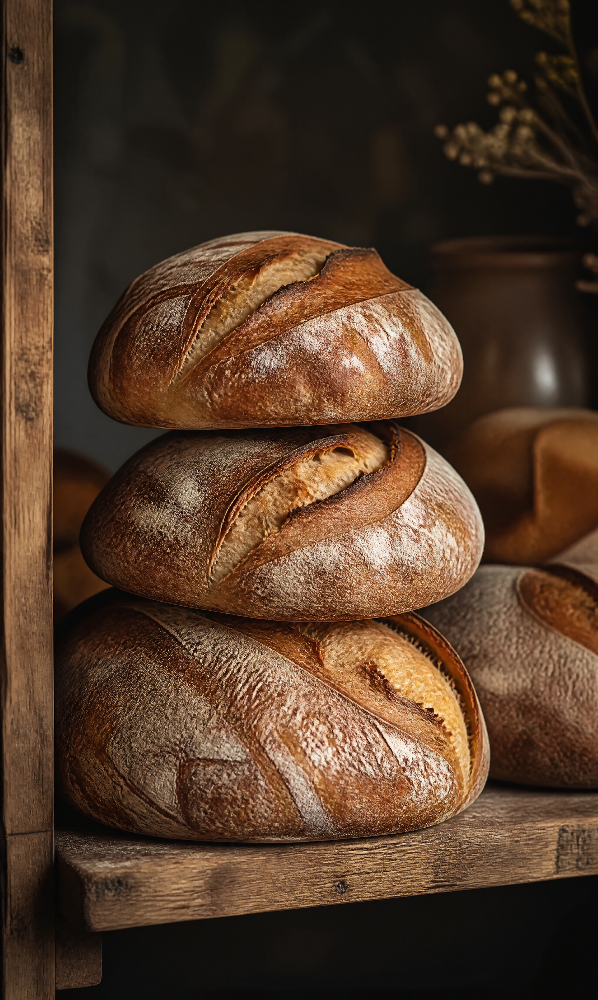
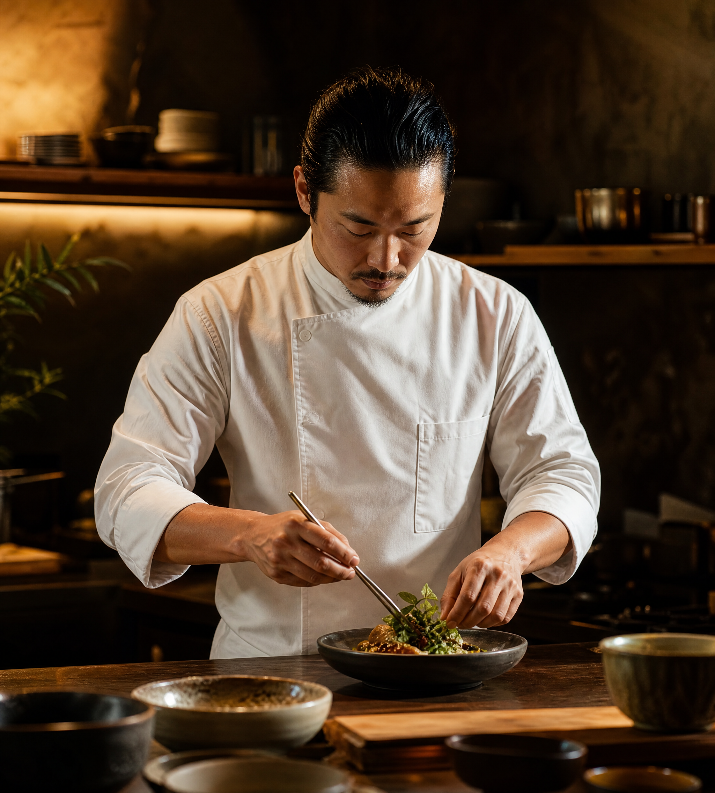
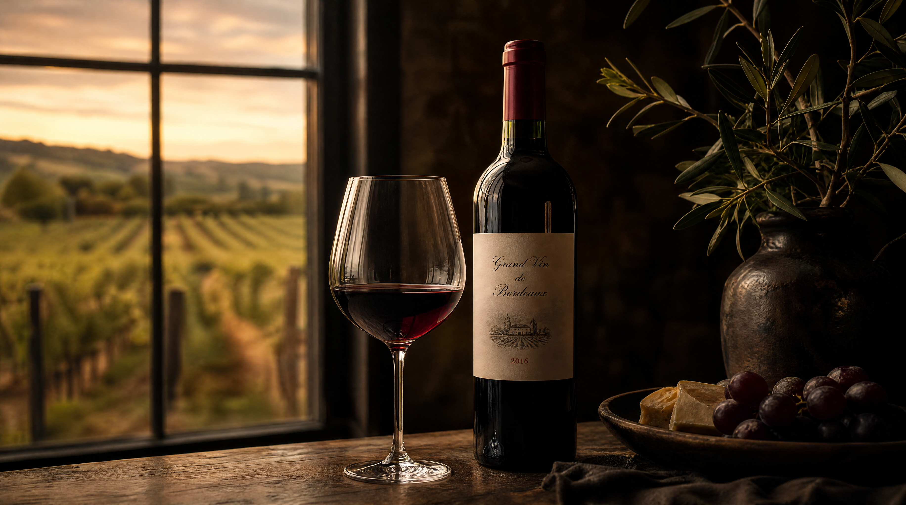
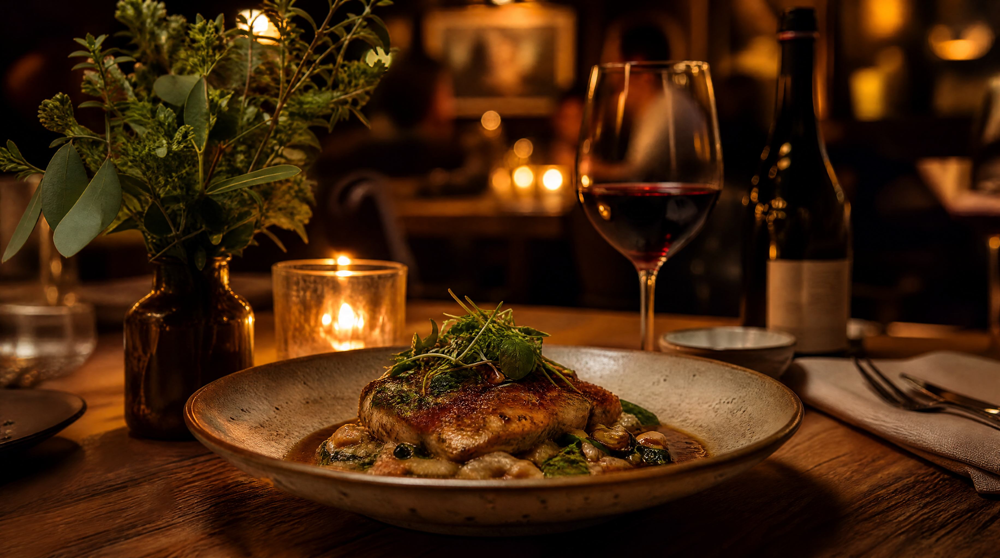

THE ART OF TASTE · ISSUE 01 · 2026
探索风味的边界。从酵母的呼吸到香料的旅行，每一道菜都是一封写给味蕾的情书。
01 — Feature Story
在上海一条不起眼的弄堂里，陈师傅每天凌晨三点起床，用一罐传承了八年的老面种，开始他一天的烘焙。"面包是活的，"他说，"你得学会倾听它。"
那罐酸面种来自旧金山的一位退休面包师，跨越太平洋，在这里扎了根。每一个气孔、每一层焦脆的外壳，都是时间与温度的对话。
8
年酵种
72h
发酵
250°C
石板


02 — Recipe
INGREDIENTS
· 有机传家宝番茄 800g
· 特级初榨橄榄油 120ml
· 大蒜 6瓣，百里香数枝
· 海盐、黑胡椒适量
METHOD
番茄对半切开，切面朝上铺入烤盘。淋橄榄油，撒蒜片、百里香、海盐。120°C 慢烤三小时，直至边缘焦糖化、汁水浓缩。

Crème Brûlée
Classic French

Oysters
Atlantic Fresh

Pain au Levain
House Baked

03 — Chef Profile
"Cooking is memory made tangible."
从巴黎蓝带到东京筑地市场，从哥本哈根 Noma 到上海弄堂。陈明远的料理融合了法式精准、日式敬畏与中式温情。他相信好的食物不需要解释——一口下去，你就懂了。
"我做菜不是为了米其林的星星。我做菜是为了看到客人闭上眼睛的那一刻。"
15
年经验
2★
米其林

04 — WINE & PAIRING
一支勃艮第黑皮诺与慢烤鸭胸的相遇，如同两位老友在秋天的重逢——温暖、熟悉，却总能发现新的层次。侍酒师 Léa 为本期每道菜精选了佐餐搭配。
6
精选酒款
12
搭配方案
3
产区
05 — SEASONAL MENU
APPETIZER
海胆茶碗蒸
北海道马粪海胆、柴鱼出汁、柚子皮
¥188
FISH
味噌银鳕鱼
西京味噌腌渍48小时、炭火慢烤、白萝卜泥
¥328
MAIN
慢烤鸭胸
法式低温慢烤、黑樱桃酱、时令根菜
¥388
DESSERT
焦糖布蕾
马达加斯加香草、焦糖脆壳、时令莓果
¥128

06 — SUBSCRIBE
订阅 Flavor，每季收到新刊。探索更多风味故事、主厨访谈与独家食谱。
subscribe@flavormagazine.cn
Instagram: @flavor_magazine
leishifu-flavor-magazine · v1.0 · 2026